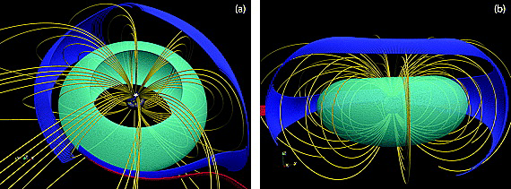
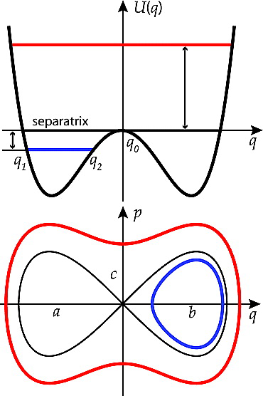
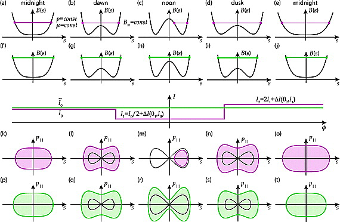
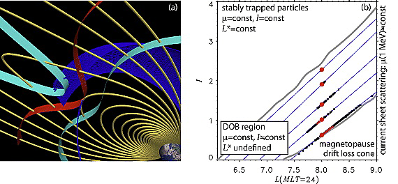
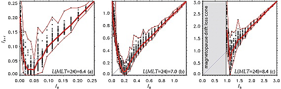
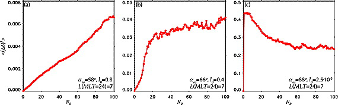
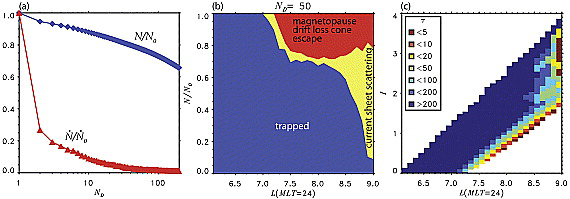
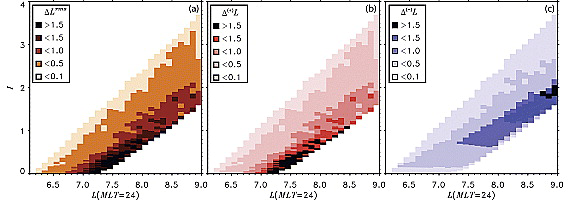
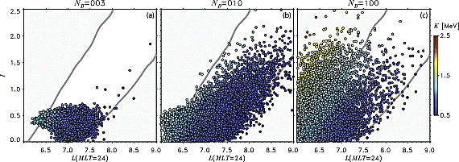

The role of drift orbit bifurcations in energization and loss
of electrons in the outer radiation belt
Introduction - Particle motion in the compressed magnetosphere
Stably trapped particles (shown in cyan color) participate in three distinct quasiperiodic motions: the gyromotion, the bounce motion and the gradient curvature drift around Earth, each associated with its own adiabatic invariant: \(μ\), \(J = p I\), and \(L^*\). Time scales for the different motions are separated by 1 to 3 orders of magnitude and all invariants are conserved.
\[ I=\oint \sqrt{1-\frac{B(s)}{B_m}} d s \]

Introduction - Separatrix crossings

\[ T_0 = \frac{2 \pi}{\omega}=\frac{2 \pi}{d H / d I}=\int_1^2 \frac{d q}{\sqrt{H-U(q)}} =\ln \left|\frac{H_S}{Δ}\right|. \]
where \(Δ = \left|H - H_S\right|\), and \(H_S\) is the particle energy at the separatrix.
Introduction - Drift orbit bifurcations
At drift orbit bifurcations the particle phase space trajectory crosses a separatrix (Figures 2l and 2m), which divides the (pk, s) phase plane into three distinct regions. The region outside of the separatrix corresponds to the bounce motion across the equator, while two lobes connected at a saddle point correspond to trajectories trapped below and above the equator. While the particle approaches the separatrix its instantaneous bounce period increases logarithmically and in some small vicinity of the separatrix becomes comparable to the drift period.
In this vicinity the quasiperiodic character of the bounce motion is broken, since the effective potential of the motion there is changing at the time scales of the instantaneous bounce period and can no longer be considered slowly varying. Close to the separatrix the second invariant is therefore not conserved. At two consecutive separatrix crossings corresponding to bifurcations off the equator and back, the invariant exhibits jumps. As a result by the time the particle resumes its motion across the equator it accumulates a nonzero change in the second invariant. Each bifurcation also leads to radial and pitch angle jumps.

Particles that undergo drift orbit bifurcations (blue color) violate the second invariant J at bifurcations, when the period of the bounce and the drift motions are no longer separated.
Introduction - Diffusion and ballistic regimes
There are two regimes of particle transport due to separatrix crossing
Diffusion regime : large initial value of the second invariant \(I\)
\[ \langle\Delta I\rangle=0,\left\langle(\Delta I)^2\right\rangle \neq 0 \]
Ballistic regime : small initial value of the second invariant \(I\)
\[ \langle\Delta I\rangle>0 \]
Transport characteristics
Magnetic field intensity at bounce points Bm is constant
\[ \mu=\frac{p_{\perp}^2}{2 m B}=\frac{p^2}{2 m B_m}=\text { const. } \]
\[ B_m\left(I, L_M ; I_0, L_{M 0}\right)=\text { const }, \]
where \(I_0\) and \(L_{M 0}\) are the initial values of the second invariant and radial location.

Separatrix crossing
\[ \left\{ \begin{array}{l}I_1=\frac{κ_1}{2} I_0+\Delta I^{+}\left(\theta_1, I_0, L_{M 0}\right) \\ I_2=\frac{2}{κ_2} I_1+\Delta I^{-}\left(\theta_2, I_1, L_{M 0}\right),\end{array} \right. \]
The coefficients \(κ_1\) and \(κ_2\) reflect the north‐south asymmetry of the magnetic field at orbit bifurcations.
Drift orbit bifurcations produce the largest effect on particles with small initial values of the invariant \(I_0\) (ballistic regime).
\[ I_2-I_0 \simeq \frac{2}{x_2} \Delta I^{+}\left(\theta_1, I_0, L_{M 0}\right) \]

The thick red line connects average invariant values, while thin red lines show the lower and the upper envelopes. Invariant jumps at all radial locations exhibit similar qualitative dependence on the initial conditions. At small initial values, the jumps are predominantly ballistic: hDIi = hIk+1 − Iki h(DI)2i1/2, shifting to the diffusion regime at larger values: hDIi ’ 0, h(DI)2i ~= 0. Interestingly, at intermediate initial values the average change in the invariant can be negative. The magnitude of jumps in the invariant increases with increase in LM; the larger the daynight asymmetry of the magnetic field, the larger the jumps of the invariant at orbit bifurcations.
Long-Term Transport Due to Multiple Bifurcations
Motivated by minimizing computational time as well as deriving a simplified description of radial and pitch angle transport due to bifurcations which can be used in radiation belt models to capture physics of the bifurcation process, we sought a reduced description of transport due to orbit bifurcations. The changes in the invariant I and the radial position LM of a particle due to two drift orbit bifurcations over the course of one drift orbit depend only on three parameters: their initial values and the bounce phase value prior to the bifurcations. Particle transport due to drift orbit bifurcations can therefore be described by a dynamical map relating the change in three state variables \((θ , I, L_M)\) over a drift orbit.

\[ \left\{\begin{array}{l} I_{k+1}=I_k+\Delta I\left(\theta_k, I_k, L_{M k}\right) \\ L_{M k+1}=L_{M k}+\Delta L\left(\theta_k, I_k, L_{M k}\right) \\ \theta_{k+1}=\theta_k+\Delta \theta \bmod 2 \pi \end{array}\right. \]
quantified by 〈(ΔL(t))2〉 of ensemble of particles at different initial values of the second invariant. (a) Weak diffusive transport at large initial value of the second invariant; (b) combination of diffusive and ballistic transport at the intermediate value of the second invariant; and (c) large ballistic jumps followed by diffusion at small initial value of the second invariant.
During the first orbit particles exhibit a semi‐coherent outward jump into the diffusion region. Subsequent bifurcations result in broadening of particle distribution along their transport characteristic. After the particle population expands across the whole bifurcation region, the h(DL)2i width stops growing, while the individual particles keep meandering back and forth along the characteristic.
Electron losses due to drift orbit bifurcations
Transport characteristics can intersect the tailward and drift loss cone boundaries of the bifurcating region producing atmospheric and magnetopause losses of the radiation belt particles.
the outward electron transport followed by their pitch angle scattering at the regions of high magnetic field curvature and loss into the atmosphere and
the inward radial transport causing an increase in particle pitch angle which places them into the magnetopause drift loss cone leading to their escape through the magnetopause on the time scales less than one drift period.

- Total number of particles in the system normalized to the number of particles at the simulation start (blue line); normalized loss rates (red line). (b) Relative contributions of the magnetopause escape and current sheet scattering to the losses at different locations in the bifurcating region after 50 drift periods. (c) Loss time scales (measured in number of drift orbits) at different locations in the region and different initial values of the second invariant. Losses affect the regions adjacent to the tailward and drift loss cone boundaries. Particles from the bulk of the bifurcation regions stay quasi-trapped, meandering back and forth across the region along their transport characteristics.
It follows from Figure 8a that most of the losses take place within the first several drift periods which points to their association with large ballistic jumps and escape either through the tailward or the drift loss cone boundary. After ∼50 drift periods the system reaches a steady state when only <1% of particles are lost over each subsequent drift period. From the entire bifurcating region 20% of particles are lost after 100 drift orbits.
Recirculation

\[ \Delta L^{r m s}\left(I_0, L_{M 0}\right)=\sqrt{\sum_k\left(L_{M k}\left(t=10 T_D\right)-L_{M 0}\right)^2} \]
Energization
To attain additional acceleration without breaking the first adiabatic invariant, the electron must be transported back outward from point 2 to point 1 along a different path in the phase space without loosing all of its acquired energy and then be radially transported again inward from point 1 to point 2 along the original path.

\[ \left\{\begin{array}{l} I_{k+1}=I_k+\Delta I\left(\theta_k, I_k, L_{M k}\right) \\ L_{M k+1}=L_{M k}+\Delta L\left(\theta_k, I_k, L_{M k}\right)+\delta L_k \eta \\ \gamma_{k+1}=\left(\frac{B\left(L_{M k+1}\right)}{B\left(L_{M k+1}-\delta L_k\right)}\left(\gamma_k^2-1\right)+1\right)^{1 / 2} \\ \theta_{k+1}=\theta_k+\Delta \theta \bmod 2 \pi, \end{array}\right. \]
Pitch angle recirculation due to drift orbit bifurcations can greatly amplify the efficiency of electron energization by radial diffusion. Here snapshots of transport and energization of an ensemble of 5 · 105 1 MeV particles initially at LM0 = 6.6 and I0 = 0.07 (aeq = 80°) due to simultaneous action of radial diffusion and drift orbit bifurcations are shown. Particle energy is indicated with color. (a) Three, (b) 10, and (c) 100 drift periods. The lower left corner corresponds to the inward boundary and maximum energization attained by radial diffusion alone (1.3 MeV), while the upper left corner is populated because of combination of diffusion and recirculation resulting in increased energization of ∼2.5 MeV.